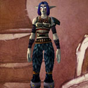
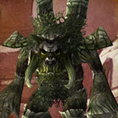
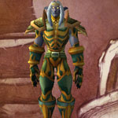

You can find the Dire Maul Capital Gardens dungeon within Feralas, Kalimdor.
The coordinates are (60.3,30.4)
Click for Dungeon Entrance:

Go up the path & into building front called Eldreth Row, you can turn left or right here.
Go over to the left hand side and you will see against the wall small doorways by some statues, the right and left portals are the same entrance.

Route:
Map 1Map 2Map 3Map 4Map 5Map 6Map 7


Bosses:
1. Illyanna Ravenoak2. Magister Kalendris3. Tendris Warpwood4. Immol'thar5. Prince Tortheldrin

Quick Boss Tactics:/i Ferra deals physical damage. Illyanna is ranged & uses arrows, her Concussive Shot dazes a player. Avoid trap on floor.
Quick Boss Tactics:
/i Uses lots of shadow damage spells. Controls a player using Dominate Mind the player will fight for the boss. At 50% uses Shadowform. Reduces players melee damage & increases his shadow damage.
/i Uses lots of shadow damage spells. Controls a player using Dominate Mind the player will fight for the boss. At 50% uses Shadowform. Reduces players melee damage & increases his shadow damage.

Quick Boss Tactics:/i Summons Ironbark Protector tree minions. Entangles & knocks back players. Move away to avoid Trample.
Quick Boss Tactics:
/i Infected Bite increases players damage taken. Frenzy increases bosses attack speed by 60%. Kill any Eye of Immol’thar.
/i Infected Bite increases players damage taken. Frenzy increases bosses attack speed by 60%. Kill any Eye of Immol’thar.

Quick Boss Tactics:/i Arcane Blast causes damage & knock back. This boss uses melee attacks inflicting physical damage. Healer be ready for Thrash as boss uses attacks two more times. If Healer gets nature locked use cooldowns to survive.